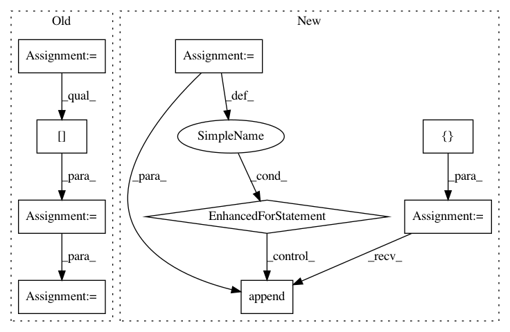

ee602b6f68f0bdd19f449a86955697f8f0a2d54c,gluoncv/data/transforms/video.py,VideoCenterCrop,forward,#VideoCenterCrop#Any#,250
Before Change
scaled_clips = nd.zeros((th, tw, c))
num_imgs = int(c / 3)
for frame_id in range(num_imgs):
cur_img = clips[:, :, frame_id*3:frame_id*3+3]
crop_img = cur_img[y1:y1+th, x1:x1+tw, :]
assert(crop_img.shape == (th, tw, 3))
scaled_clips[:, :, frame_id*3:frame_id*3+3] = crop_img
return scaled_clips
class VideoTenCrop(Block):
Crop 10 regions from an array.
After Change
x1 = int(round((w - tw) / 2.))
y1 = int(round((h - th) / 2.))
new_clips = []
for cur_img in clips:
new_clips.append(cur_img[y1:y1+th, x1:x1+tw, :])
return new_clips
class VideoThreeCrop(Block):
This method crops 3 regions. All regions will be in shape
In pattern: SUPERPATTERN
Frequency: 3
Non-data size: 9
Instances
Project Name: dmlc/gluon-cv
Commit Name: ee602b6f68f0bdd19f449a86955697f8f0a2d54c
Time: 2019-09-21
Author: yizhu59@gmail.com
File Name: gluoncv/data/transforms/video.py
Class Name: VideoCenterCrop
Method Name: forward
Project Name: NifTK/NiftyNet
Commit Name: 5b5ea7b5d864e53894f5342f19becfba8f8035e5
Time: 2017-12-18
Author: wenqi.li@ucl.ac.uk
File Name: niftynet/network/interventional_dense_net.py
Class Name: INetDense
Method Name: layer_op
Project Name: dmlc/gluon-cv
Commit Name: ee602b6f68f0bdd19f449a86955697f8f0a2d54c
Time: 2019-09-21
Author: yizhu59@gmail.com
File Name: gluoncv/data/transforms/video.py
Class Name: VideoMultiScaleCrop
Method Name: forward